토목기사 (2020-08-22 기출문제)
1과목: 응용역학
1. 지름 d=120cm, 벽두께 t=0.6cm 인 긴 강관이 q=2MPa의 내압을 받고 있다. 이 관벽 속에 발생하는 원환응력(σ)의 크기는?
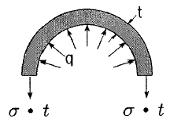
- 50 MPa
- 100 MPa
- 150 MPa
- 200 MPa
(정답률: 63%)

2. 전단중심(shear center)에 대한 설명으로 틀린 것은?
- 1축이 대칭인 단면의 전단중심은 도심과 일치한다.
- 1축이 대칭인 단면의 전단중심은 그 대칭축 선상에 있다.
- 하중이 전단중심 점을 통과하지 않으면 보는 비틀린다.
- 전단중심이란 단면이 받아내는 전단력의 합력점의 위치를 말한다.
(정답률: 52%)
3. 그림과 같은 연속보에서 B점의 지점 반력은?
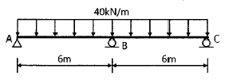
- 240 kN
- 280 kN
- 300 kN
- 320 kN
(정답률: 63%)
4. 아래 그림과 같은 보에서 A점의 수직반력은?
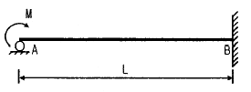
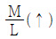
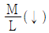
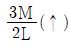
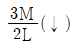
(정답률: 52%)
5. 그림과 같은 1/4 원 중에서 음영부분의 도심까지 위치 yo는?
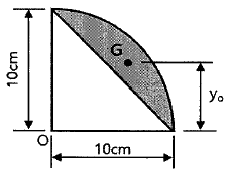
- 4.94 cm
- 5.20 cm
- 5.84 cm
- 7.81 cm
(정답률: 51%)
6. 그림과 같이 단순보의 A 점에 휨모멘트가 작용하고 있을 경우 A 점에서 전단력의 절댓값은?
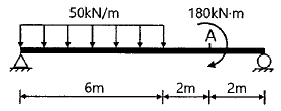
- 72 kN
- 108 kN
- 126 kN
- 252 kN
(정답률: 64%)
7. 그림과 같은 3힌지 라멘의 휨모멘트도(BMD)는?
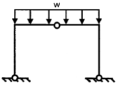
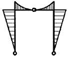
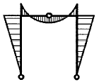
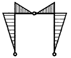
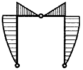
(정답률: 74%)
8. 그림과 같은 도형에서 빗금 친 부분에 대한 x, y축의 단면 상승 모멘트(Ixy)는?
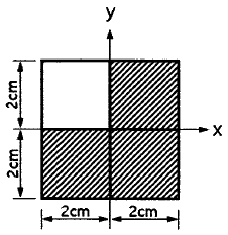
- 2 cm4
- 4 cm4
- 8 cm4
- 16 cm4
(정답률: 63%)
9. 등분포 하중을 받는 단순보에서 중앙점의 처짐을 구하는 공식은? (단, 등분포 하중은 W, 보의 길이는 L, 보의 휨강성은 EI이다.)
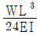
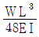
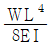
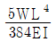
(정답률: 72%)
10. 그림과 같은 3힌지 아치에서 B점의 수평반력(HB)은?
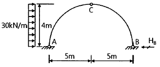
- 20 kN
- 30 kN
- 40 kN
- 60 kN
(정답률: 63%)
11. 그림과 같은 보의 허용 휨응력이 80 MPa 일 때 보에 작용할 수 있는 등분포 하중(w)은?
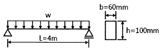
- 50 kN/m
- 40 kN/m
- 5 kN/m
- 4 kN/m
(정답률: 55%)
12. 아래 그림과 같이 속이 빈 단면에 전단력 V=150kN 이 작용하고 있다. 단면에 발생하는 최대 전단응력은?
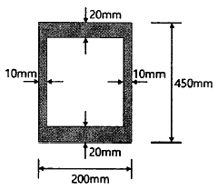
- 9.9 MPa
- 19.8 MPa
- 99 MPa
- 198 MPa
(정답률: 66%)
13. 그림은 정사각형 단면을 갖는 단주에서 단면의 핵을 나타낸 것이다. x의 거리는?
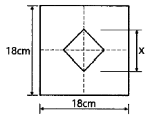
- 3cm
- 4.5cm
- 6cm
- 9cm
(정답률: 59%)
14. 그림과 같은 캔틸레버보에서 자유단에 집중하중 2P를 받고 있을 때 휨모멘트에 의한 탄성변형에너지는? (단, EI는 일정하고, 보의 자중은 무시한다.)
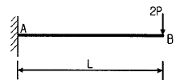
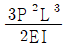
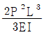
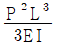
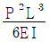
(정답률: 66%)
15. 지름 50mm, 길이 2m의 봉을 길이방향으로 당겼더니 길이가 2mm 늘어났다면, 이 때 봉의 지름은 얼마나 줄어드는가? (단, 이 봉의 푸아송 비는 0.3 이다.)
- 0.015 mm
- 0.030 mm
- 0.045 mm
- 0.060 mm
(정답률: 64%)
16. 그림과 같은 크레인의 D1부재의 부재력은?
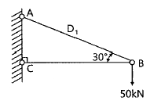
- 43 kN
- 50 kN
- 75 kN
- 100 kN
(정답률: 68%)
17. 그림과 같은 직사각형 단면의 보가 최대휨모멘트 Mmax=20kN·m를 받을 때 a-a단면의 휨응력은?
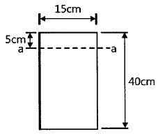
- 2.25 MPa
- 3.75 MPa
- 4.25 MPa
- 4.65 MPa
(정답률: 57%)
18. 그림에서 합력 R과 P1 사이의 각을 α라고 할 때 tanα를 나타낸 식으로 옳은 것은?
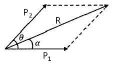
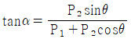
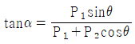
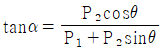
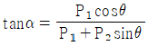
(정답률: 63%)
19. 그림과 같은 켄틸레버보에서 최대 처짐각(θB)은? (단, EI는 일정하다.)
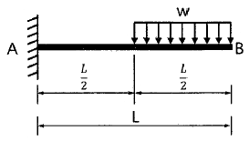
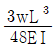
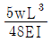
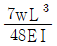
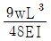
(정답률: 55%)
20. 길이가 3m이고 가로 200mm, 세로 300mm인 직사각형 단면의 기둥이 있다. 지지상태가 양단힌지인 경우 좌굴응력을 구하기 위한 이 기둥의 세장비는?
- 34.6
- 43.3
- 52.0
- 60.7
(정답률: 53%)
2과목: 측량학
21. 그림과 같이
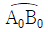
의 노선을 e=10m 만큼 이동하여 내측으로 노선을 설치하고자 한다. 새로운 반지름 RN은? (단, Ro = 200m, I = 60°)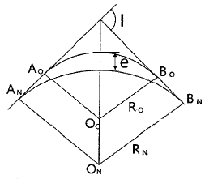
- 217.64 m
- 238.26 m
- 250.50 m
- 264.64 m
(정답률: 39%)
22. 하천측량에 대한 설명으로 옳지 않은 것은?
- 수위관측소 위치는 지천의 합류점 및 분류점으로서 수위의 변화가 일어나기 쉬운 곳이 적당하다.
- 하천측량에서 수준측량을 할 때의 거리표는 하천의 중심에 직각 방향으로 설치한다.
- 심천측량은 하천의 수심 및 유수부분의 하저 상황을 조사하고 횡단면도를 제작하는 측량을 말한다.
- 하천측량 시 처음에 할 일은 도상 조사로서 유로 상황, 지역면적, 지형, 토지이용 상황 등을 조사하여야 한다.
(정답률: 67%)
23. 그림과 같이 곡선반지름 R=500m인 단곡선을 설치할 때 교점에 장애물이 있어 ∠ACD=150°, ∠CDB=90°, CD=100m를 관측하였다. 이때 C점으로부터 곡선의 시점까지의 거리는?
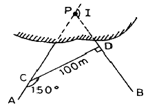
- 530.27m
- 657.04m
- 750.56m
- 796.09m
(정답률: 41%)
24. 그림의 다각망에서 C점의 좌표는? (단,
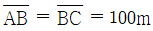
이다.)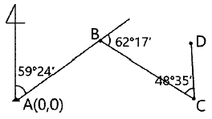
- Xc = -5.31m, Yc = 160.45m
- Xc = -1.62m, Yc = 170.17m
- Xc = -10.27m, Yc = 89.25m
- Xc = 50.90m, Yc = 86.07m
(정답률: 44%)
25. 각관측 방법 중 배각법에 관한 설명으로 옳지 않은 것은?
- 방향각법에 비하여 읽기 오차의 영향을 적게 받는다.
- 수평각 관측법 중 가장 정확한 방법으로 정밀한 삼각측량에 주로 이용된다.
- 시준할 때의 오차를 줄일 수 있고 최소 눈금 미만의 정밀한 관측값을 얻을 수 있다.
- 1개의 각을 2회 이상 반복 관측하여 관측한 각도의 평균을 구하는 방법이다.
(정답률: 55%)
26. 수준측량에서 시준거리를 같게 함으로써 소거할 수 있는 오차에 대한 설명으로 틀린 것은?
- 기포관축과 시준선이 평행하지 않을 때 생기는 시준선 오차를 소거할 수 있다.
- 지구곡률오차를 소거할 수 있다.
- 표척 시준시 초점나사를 조정할 필요가 없으므로 이로 인한 오차인 시준오차를 줄일 수 있다.
- 표척의 눈금 부정확으로 인한 오차를 소거할 수 있다.
(정답률: 55%)
27. 삼각측량을 위한 삼각점의 위치선정에 있어서 피해야 할 장소와 가장 거리가 먼 것은?
- 측표를 높게 설치해야 되는 곳
- 나무의 벌목면적이 큰 곳
- 편심관측을 해야 되는 곳
- 습지 또는 하상인 곳
(정답률: 50%)
28. 폐합다각측량을 실시하여 위거 오차 30cm, 경거 오차 40cm를 얻었다. 다각측량의 전체 길이가 500m라면 다각형의 폐합비는?
- 1/100
- 1/125
- 1/1000
- 1/1250
(정답률: 57%)
29. 직접고저측량을 실시한 결과가 그림과 같을 때, A점의 표고가 10m라면 C점의 표고는? (단, 그림은 개략도로 실제 치수아 다를 수 있음)
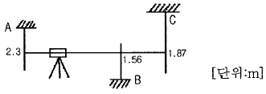
- 9.57m
- 9.66m
- 10.57m
- 10.66m
(정답률: 61%)
30. 하천측량에서 유속관측에 대한 설명으로 옳지 않은 것은?
- 유속계에 의한 평균유속 계산식은 1점법, 2점법, 3점법 등이 있다.
- 하천기울기(I)를 이용하여 유속을 구하는 식에는 Chezy식과 Manning식 등이 있다.
- 유속관측을 위해 이용되는 부자는 표면부자, 2중부자, 봉부자 등이 있다.
- 위어(weir)는 유량관측을 위해 직접적으로 유속을 관측하는 장비이다.
(정답률: 63%)
31. 직사각형의 두변의 길이를 1/100 정밀도로 관측하여 면적을 산출할 경우 산출된 면적의 정밀도는?
- 1/50
- 1/100
- 1/200
- 1/300
(정답률: 67%)
32. 전자파거리측량기로 거리를 측량할 때 발생되는 관측 오차에 대한 설명으로 옳은 것은?
- 모든 관측 오차는 거리에 비례한다.
- 모든 관측 오차는 거리에 비례하지 않는다.
- 거리에 비례하는 오차와 비례하지 않는 오차가 있다.
- 거리가 어떤 길이 이상으로 커지면 관측오차가 상쇄되어 길이에 대한 영향이 없어진다.
(정답률: 58%)
33. 토적곡선(mass curve)을 작성하는 목적으로 가장 거리가 먼 것은?
- 토량의 배분
- 교통량 산정
- 토공기계의 선정
- 토량의 운반거리 산출
(정답률: 67%)
34. 지반의 높이를 비교할 때 사용하는 기준면은?
- 표고(elevation)
- 수준면(level surface)
- 수평면(horizontal plane)
- 평균해수면(mean sea level)
(정답률: 59%)
35. 축척 1:50000 지형도 상에서 주곡선 간의 도상 길이가 1cm 이었다면 이 지형의 경사는?
- 4%
- 5%
- 6%
- 10%
(정답률: 47%)
36. 노선설치에서 곡선반지름 R, 교각 I인 단곡선을 설치할 때 곡선의 중앙종거(M)를 구하는 식으로 옳은 것은?
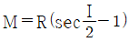
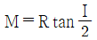
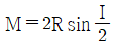
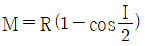
(정답률: 55%)
37. 다음 우리나라에서 사용되고 있는 좌표계에 대한 설명 중 옳지 않은 것은?
- ㉠
- ㉡
- ㉢
- ㉣
(정답률: 55%)
38. 그림과 같은 편심측량에서 ∠ABC는? (단, = 2.0km, = 1.5km, e = 0.5m, t = 54°30′, ρ = 300°30′)
- 54° 28′ 45″
- 54° 30′ 19″
- 54° 31′ 58″
- 54° 33′ 14″
(정답률: 50%)
39. 지형의 표시방법 중 하천, 항만, 해안측량 등에서 심천측량을 할 때 측점에 숫자로 기입하여 고저를 표시하는 방법은?
- 점고법
- 음영법
- 연선법
- 등고선법
(정답률: 66%)
40. 다각측량에서 거리관측 및 각관측의 정밀도는 균형을 고려해야 한다. 거리관측의 허용오차가 ± 1/10000 이라고 할 때, 각관측의 허용오차는?
- ±20″
- ±10″
- ±5″
- ±1′
(정답률: 61%)
3과목: 수리학 및 수문학
41. 그림과 같이 1m×1m×1m 인 정육면체의 나무가 물에 떠 있을 때 부체(浮體)로서 상태로 옳은 것은? (단, 나무의 비중은 0.8 이다.)
- 안정하다.
- 불안정하다.
- 중립상태다.
- 판단할 수 없다.
(정답률: 65%)
42. 관의 마찰 및 기타 손실수두를 양정고의 10%로 가정할 경우 펌프의 동력을 마력으로 구하면? (단, 유량은 Q=0.07m3/s 이며, 효율은 100%로 가정한다.)
- 57.2 HP
- 48.0 HP
- 51.3 HP
- 56.5 HP
(정답률: 41%)
43. 비피압대수층 내 지름 D=2m, 영향권의 반지름 R=1000m, 원지하수의 수위 H=9m, 집수정의 수위 ho=5m인 심정호의 양수량은? (단, 투수계수 k=0.0038m/s)
- 0.0415 m3/s
- 0.0461 m3/s
- 0.0968 m3/s
- 1.8232 m3/s
(정답률: 45%)
44. 지름 25cm, 길이 1m의 원주가 연직으로 물에 떠 있을 때, 물 속에 가라앚은 부분의 길이가 90cm 라면 원주의 무게는? (단, 무게 1kgf = 9.8N)
- 253 N
- 344 N
- 433 N
- 503 N
(정답률: 47%)
45. 폭이 50m인 직사각형 수로의 도수 전 수위 h1 = 3m, 유량 Q = 2000 m3/s 일 때 대응수심은?
- 1.6m
- 6.1m
- 9.0m
- 도수가 발생하지 않는다.
(정답률: 49%)
46. 배수면적이 500 ha, 유출계수가 0.70인 어느 유역에 연평균강우량이 1300mm 내렸다. 이때 유역 내에서 발생한 최대유출량은?
- 0.1443 m3/s
- 12.64 m3/s
- 14.43 m3/s
- 1264 m3/s
(정답률: 33%)
47. 그림과 같은 개수로에서 수로경사 S0 = 0.001, Manning 의 조도계수 n = 0.002 일 때 유량은?
- 약 150 m3/s
- 약 320 m3/s
- 약 480 m3/s
- 약 540 m3/s
(정답률: 51%)
48. 20℃에서 지름 0.3mm인 물방울이 공기와 접하고 있다. 물방울 내부의 압력이 대기압보다 10 gf/cm2만큼 크다고 할 때 표면장력의 크기를 dyne/cm로 나타내면?
- 0.075
- 0.75
- 73.50
- 75.0
(정답률: 36%)
49. 수조에서 수면으로부터 2m의 깊이에 있는 오리피스의 이론 유속은?
- 5.26 m/s
- 6.26 m/s
- 7.26 m/s
- 8.26 m/s
(정답률: 58%)
50. 수심이 10cm, 수로 폭이 20cm인 직사각형 개수로에서 유량 Q=80cm3/s가 흐를 때 동점성계수 v=1.0×10-2 cm2/s 이면 흐름은?
- 난류, 사류
- 층류, 사류
- 난류, 상류
- 층류, 상류
(정답률: 45%)
51. 방파제 건설을 위한 해안지역의 수심이 5.0m, 입사파랑의 주기가 14.5초인 장파(long wave)의 파장(wave length)은? (단, 중력가속도 g = 9.8 m/s2)
- 49.5m
- 70.5m
- 101.5m
- 190.5m
(정답률: 49%)
52. 수중 오리피스(orifice)의 유속에 관한 설명으로 옳은 것은?(문제 오류로 가답안 발표시 4번으로 발표되었지만 확정답안 발표시 1, 4번이 정답처리 되었습니다. 여기서는 가답안인 4번을 누르시면 정답 처리 됩니다.)
- H1이 클수록 유속이 빠르다.
- H2가 클수록 유속이 빠르다.
- H3이 클수록 유속이 빠르다.
- H4가 클수록 유속이 빠르다.
(정답률: 64%)
53. 누가우량곡선(rainfall mas curve)의 특성으로 옳은 것은?
- 누가우량곡선의 경사가 클수록 강우강도가 크다.
- 누가우량곡선의 경사가 지역에 관계없이 일정하다.
- 누가우량곡선으로부터 일정기간 내의 강우량을 산출하는 것을 불가능하다.
- 누가우량곡선은 자기우량기록에 의하여 작성하는 것보다 보통우랑계의 기록에 의하여 작성하는 것이 더 정확하다.
(정답률: 63%)
54. 그림과 같은 유역(12km×8km)의 평균강우량을 Thiessen 방법으로 구한 값은? (단, 작은 삼각형은 2km×2km의 정사각형으로서 모두 크기가 동일하다.)
- 120mm
- 123mm
- 125mm
- 130mm
(정답률: 45%)
55. Hardy-Cross의 관망계산 시 가정조건에 대한 설명으로 옳은 것은?
- 합류점에 유입하는 유량은 그 점에서만 1/2만 유출된다.
- 각 분기점에 유입하는 유량은 그 점에서 정지하지 않고 전부 유출한다.
- 폐합관에서 시계방향 또는 반시계 방향으로 흐르는 관로의 손실수두의 합은 0 이 될 수 없다.
- Hardy-Cross 방법은 관경에 관계없이 관수로의 분할 개수에 의해 유량 분배를 하면 된다.
(정답률: 45%)
56. 정상적인 흐름에서 1개 유선 상의 유체입자에 대하여 그 속도수두를 V2/2g, 위치수두를 Z, 압력수두를 P/γo 라 할 때 동수경사는?
- 를 연결한 값이다.
- 를 연결한 값이다.
- 를 연결한 값이다.
- 를 연결한 값이다.
(정답률: 52%)
57. 아래 그림과 같이 지름 10cm인 원 관이 지름 20cm로 급확대되었다. 관의 확대전 유속이 4.9m/s 라면 단면 급확대에 의한 손실수두는?
- 0.69m
- 0.96m
- 1.14m
- 2.45m
(정답률: 26%)
58. 왜곡모형에서 Froude 상사법칙을 이용하여 물리량을 표시한 것으로 틀린 것은? (단, Xr은 수평축척비, Yr은 연직축척비이다.)
- 시간비 :
- 경사비 :
- 유속비 :
- 유량비 :
(정답률: 48%)
59. 관의 지름이 각각 3m, 1.5m 인 서로 다른 관이 연결되어 있을 때, 지름 3m 관내에 흐르는 유속이 0.03 m/s 이라면 지름 1.5m 관내에 흐르는 유량은?
- 0.157 m3/s
- 0.212 m3/s
- 0.378 m3/s
- 0.540 m3/s
(정답률: 57%)
60. 홍수유출에서 유역면적이 작으면 단시간의 강우에, 면적이 크면 장시간의 강우에 문제가 발생한다. 이와 같은 수문학적 인자 사이의 관계를 조사하는 DAD 해석에 필요 없는 인자는?
- 강우량
- 유역면적
- 증발산량
- 강우지속시간
(정답률: 66%)
4과목: 철근콘크리트 및 강구조
61. 보의 경간이 10m이고, 양쪽 슬래브의 중심간 거리가 2.0m 인 대칭형 T형보에 있어서 플랜지 유효폭은? (단, 부재의 복부폭(bw)은 500mm, 플랜지의 두께(tf)는 100mm 이다.)
- 2000 mm
- 2100 mm
- 2500 mm
- 3000 mm
(정답률: 59%)
62. 옹벽의 구조해석에 대한 설명으로 틀린 것은?
- 뒷부벽은 직사각형보로 설계하여야 하며, 앞부벽은 T형보로 설계하여야 한다.
- 저판의 뒷굽판은 정확한 방법이 사용되지 않는 한, 뒷굽판 상부에 재하되는 모든 하중을 지지하도록 설계하여야 한다.
- 캔틸레버식 옹벽의 저판은 전면벽과의 접합부를 고정단으로 간주한 켄틸레버로 가정하여 단면을 설계할 수 있다.
- 부벽식 옹벽의 전면벽은 3변 지지된 2방향 슬래브로 설계할 수 있다.
(정답률: 65%)
63. 깊은보의 전단 설계에 대한 구조세목의 설명으로 틀린 것은?
- 휨인장철근과 직각인 수직전단철근의 단면적 Av를 0.0025 bws 이상으로 하여야 한다.
- 휨인장철근과 직각인 수직전단철근의 간격 s를 d/5 이하, 또한 300mm 이하로 하여야 한다.
- 휨인장철근과 평행한 수평전단철근의 단면적 Avh를 0.0015 bwsh 이상으로 하여야 한다.
- 휨인장철근과 평행한 수평전단철근의 간격 sh를 d/4 이하, 또한 350mm 이하로 하여야 한다.
(정답률: 41%)
64. 그림과 같은 단면의 균열모멘트 Mcr은? (단, fck = 24MPa, fy = 400 MPa, 보통중량 콘크리트이다.)
- 22.46 kN·m
- 28.24 kN·m
- 30.81 kN·m
- 38.58 kN·m
(정답률: 53%)
65. 철근의 겹침이음에서 A급 이음의 조건에 대한 설명으로 옳은 것은?
- 배근된 철근량이 이음부 전체구간에서 해석결과 요구되는 소요철근량의 2배 이상이고 소요 겹침이음길이 내 겹침이음된 철근량이 전체 철근량이 1/2 이하인 경우
- 배근된 철근량이 이음부 전체구간에서 해석결과 요구되는 소요철근량의 1.5배 이상이고 소요 겹침이음길이 내 겹침이음된 철근량이 전체 철근량이 1/2 이상인 경우
- 배근된 철근량이 이음부 전체구간에서 해석결과 요구되는 소요철근량의 2배 이상이고 소요 겹침이음길이 내 겹침이음된 철근량이 전체 철근량이 1/3 이하인 경우
- 배근된 철근량이 이음부 전체구간에서 해석결과 요구되는 소요철근량의 1.5배 이상이고 소요 겹침이음길이 내 겹침이음된 철근량이 전체 철근량이 1/3 이상인 경우
(정답률: 55%)
66. 그림의 보에서 계수전단력 Vu = 262.5 kN에 대한 가장 적당한 스터럽 간격은? (단, 사용된 스터럽은 D13철근이다. 철근D13의 단면적은 127mm2, fck = 24 MPa, fyt = 350 MPa 이다.)
- 125mm
- 195mm
- 210mm
- 250mm
(정답률: 46%)
67. 균형철근량 보다 적고 최소철근량 보다 많은 인장철근을 가진 과소철근 보가 휨에 의해 파괴될 때의 설명으로 옳은 것은?
- 인장측 철근이 먼저 항복한다.
- 압축측 콘크리트가 먼저 파괴된다.
- 압축측 콘크리트와 인장측 철근이 동시에 항복한다.
- 중립축이 인장측으로 내려오면서 철근이 먼저 파괴된다.
(정답률: 48%)
68. 그림과 같은 맞대기 용접의 용접부에 발생하는 인장 응력은?
- 100 MPa
- 150 MPa
- 200 MPa
- 220 MPa
(정답률: 63%)
69. As′ = 1500 mm2, As = 1800 mm2 로 배근된 그림과 같은 복철근 보의 순간처짐이 10mm일 때, 5년 후 지속하중에 의해 유발되는 장기처짐은?
- 14.1mm
- 13.3mm
- 12.7mm
- 11.5mm
(정답률: 58%)
70. 아래 그림과 같은 단면을 가지는 직사각형 단철근 보의 설계휨강도를 구할 때 사용되는 강도감소계수(ø) 값은 약 얼마인가? (단, As = 3176 mm2, fck = 38 MPa, fy = 400 MPa)
- 0.731
- 0.764
- 0.817
- 0.834
(정답률: 50%)
71. 콘크리트 속에 뭍혀 있는 철근이 콘크리트와 일체가 되어 외력에 저항할 수 있는 이유로 틀린 것은?
- 철근과 콘크리트 사이의 부착강도가 크다.
- 철근과 콘크리트의 탄성계수가 거의 같다.
- 콘크리트 속에 묻힌 철근은 부식하지 않는다.
- 철근과 콘크리트의 열팽창계수가 거의 같다.
(정답률: 56%)
72. 강도설계법에서 fck = 30 MPa, fy = 350 MPa 일 때 단철근 직사각형 보의 균형철근비(ρb)는?
- 0.0351
- 0.0369
- 0.0385
- 0.0391
(정답률: 49%)
73. 2방향 슬래브 직접설계법의 제한상으로 틀린 것은?
- 각 방향으로 3경간 이상 연속되어야 한다.
- 슬래브 판들은 단변 경간에 대한 장변 경간의 비가 2 이하인 직사각형이어야 한다.
- 각 방향으로 연속한 받침부 중심간 경간 차이는 긴 경간의 1/3 이하이어야 한다.
- 연속한 기둥 중심선을 기준으로 기둥의 어긋남은 그 방향 경간의 20% 이하이어야 한다.
(정답률: 62%)
74. 프리스트레스트 콘크리트의 원리를 설명하는 개념 중 아래의 표에서 설명하는 개념은?
- 균등질 보의 개념
- 하중평형의 개념
- 내력 모멘트의 개념
- 허용응력의 개념
(정답률: 58%)
75. 다음 중 용접부의 결함이 아닌 것은?
- 오버랩(Overlap)
- 언더컷(Undercut)
- 스터드(Stud)
- 균열(Crack)
(정답률: 59%)
76. 부분적 프리스트레싱(Partial Prestressing)에 대한 설명으로 옳은 것은?
- 구조물에 부분적으로 PSC부재를 사용하는 것
- 부재단면의 일부에만 프리스트레스를 도입하는 것
- 설계하중의 일부만 프리스트레스에 부담시키고 나머지는 긴장재에 부담시키는 것
- 설계하중이 작용할 때 PSC부재 단면의 일부에 인장응력이 생기는 것
(정답률: 43%)
77. 강도설계법의 설계가정으로 틀린 것은?
- 콘크리트의 인장강도는 철근콘크리트 부재 단면의 휨강도 계산에서 무시할 수 있다.
- 콘크리트의 변형률은 중립축부터 거리에 비례한다.
- 콘크리트의 압축응력의 크기는 0.80fck로 균등하고, 이 응력은 최대 압축변형률이 발생하는 단면에서 a=β1·c까지의 부분에 등분포 한다.
- 사용 철근의 응력이 설계기준항복강도 fy 이하일 때 철근의 응력은 그 변형률에 Es르 곱한 값으로 취한다.
(정답률: 46%)
78. 아래 그림과 같은 독립확대기초에서 1방향 전단에 대해 고려할 경우 위험단면의 계수전단력(Vu)는? (단, 계수하중 Pu = 1500 kN 이다.)
- 255 kN
- 387 kN
- 897 kN
- 1210 kN
(정답률: 36%)
79. PS강재를 포물선으로 배치한 PSC보에서 상향의 등분포력(u)의 크기는 얼마인가? (단, P=2600kN, 단면의 폭(b)은 50cm, 높이()는 80cm, 지간 중앙에서 PS강재의 편심(s)은 20cm 이다.)
- 8.50 kN/m
- 16.25 kN/m
- 19.65 kN/m
- 35.60 kN/m
(정답률: 57%)
80. 순단면이 볼트의 구멍 하나를 제외한 단면(즉, A-B-C 단면)과 같돌고 피치(s)를 결정하면? (단, 구멍의 지름은 22mm 이다.)
- 114.9 mm
- 90.6 mm
- 66.3 mm
- 50 mm
(정답률: 59%)
5과목: 토질 및 기초
81. 흙의 활성도에 대한 설명으로 틀린 것은?
- 점토의 활성도가 클수록 물을 많이 흡수하여 팽창이 많이 일어난다.
- 활성도는 2μm 이하의 점토함유율에 대한 액성지수의 비로 정의된다.
- 활성도는 점토광물의 종류에 따라 다르므로 활성도로부터 점토를 구성하는 점토광물을 추정할 수 있다.
- 흙 입자의 크기가 작을수록 비표면적이 커져 물을 많이 흡수하므로, 흙의 활성은 점토에서 뚜렷이 나타난다.
(정답률: 44%)
82. 그림과 같은 지반에서 유효응력에 대한 점착력 및 마찰각이 각각 c′ = 10 kN/m2, ø′ = 20° 일 때, A점엣의 전단강도는? (단, 물의 단위중량은 9.81 kN/m3 이다.)
- 34.25 kN/m2
- 44.94 kN/m2
- 54.25 kN/m2
- 66.17 kN/m2
(정답률: 55%)
83. 흙의 다짐에 대한 설명 중 틀린 것은?
- 일반적으로 흙의 건조밀도는 가하는 다짐에너지가 클수록 크다.
- 모래질 흙은 진동 또는 진동을 동반하는 다짐 방법이 유효하다.
- 건조밀도-함수비 곡선에서 최적 함수비와 최대건조밀도를 구할 수 있다.
- 모래질을 많이 포함한 흙의 건조밀도-함수비 곡선의 경사는 완만하다.
(정답률: 52%)
84. 표준관입시험(SPT)을 할 때 처음 150mm 관입에 요하는 N값은 제외하고, 그 후 300mm 관입에 요하는 타격수로 N값을 구한다. 그 이유로 옳은 것은?
- 흙은 보통 150mm 밑부터 그 흙의 성질을 가장 잘 나타낸다.
- 관입봉의 길이가 정확히 450mm 이므로 이에 맞도록 관입시키기 위함이다.
- 정확히 300mm를 관입시키기가 어려워서 150mm 관입에 요하는 N값을 제외한다.
- 보링구멍 밑면 흙이 보링에 의하여 흐트러져 150mm 관입 후부터 N값을 측정한다.
(정답률: 55%)
85. 연약지반 개량공법에 대한 설명 중 틀린 것은?
- 샌드드레인 공법은 2차 압밀비가 높은 점토 및 이탄 같은 유기질 흙에 큰 효과가 있다.
- 화학적 변화에 의한 흙의 강화공법으로는 소결 공법, 전기화학적 공법 등이 있다.
- 동압밀공법 적용 시 과잉간극 수압의 소산에 의한 강도증가가 발생한다.
- 장기간에 걸친 배수공법은 샌드드레인이 페이퍼 드레인보다 유리하다.
(정답률: 34%)
86. 흐트러지지 않은 시료를 이용하여 액성한계 40%, 소성한계 22.3%를 얻었다. 정규압밀점토의 압축지수(Cc)값을 Terzaghi 와 Peck의 경험식에 의하 구하면?
- 0.25
- 0.27
- 0.30
- 0.35
(정답률: 47%)
87. 다음 중 흙댐(Dam)의 사면안정 검토 시 가장 위험한 상태는?
- 상류사면의 경우 시공 중과 만수위일 때
- 상류사면의 경우 시공 직후와 수위 급강하일 때
- 하류사면의 경우 시공 직후와 수위 급강하일 때
- 하류사면의 경우 시공 중과 만수위일 때
(정답률: 55%)
88. 모래지층 사이에 두께 6m의 점토층이 있다. 이 점토의 토질시험 결과가 아래 표와 같을 때, 이 점토층의 90% 압밀을 요하는 시간은 약 얼마인가? (단, 1년은 365일로 하고, 물의 단위중량(γw)은 9.81 kN/m3이다.)
- 50.7년
- 12.7년
- 5.07년
- 1.27년
(정답률: 38%)
89. 5m×10m의 장방형 기초위에 q=60kN/m2의 등분포하중이 작용할 때, 지표면 아래 10m에서의 연직응력증가량(△σv)은? (단, 2:1 응력분포법을 사용한다.)
- 10 kN/m2
- 20 kN/m2
- 30 kN/m2
- 40 kN/m2
(정답률: 48%)
90. 도로의 평판 재하 시험방법(KS F 2310)에서 시험을 끝낼 수 있는 조건이 아닌 것은?
- 재하 응력이 현장에서 예상할 수 있는 가장 큰 접지 압력의 크기를 넘으면 시험을 멈춘다.
- 재하 응력이 그 지반의 항복점을 넘을 때 시험을 멈춘다.
- 침하가 더 이상 일어나지 않을 때 시험을 멈춘다.
- 침하량이 15mm 에 달할 때 시험을 멈춘다.
(정답률: 56%)
91. 그림에서 흙의 단면적이 40cm2 이고 투수계수가 0.1cm/s 일 때 흙 속을 통과하는 유량은?
- 1 m3/h
- 1 cm3/s
- 100 m3/h
- 100 cm3/s
(정답률: 52%)
92. Terzaghi 의 얕은 기초에 대한 수정지지력 공식에서 형상계수에 대한 설명 중 틀린 것은? (단, B는 단변의 길이, L은 장변의 길이이다.)
- 연속기초에서 α = 1.0, β = 0.5 이다.
- 원형기초에서 α = 1.3, β = 0.6 이다.
- 정사각형기초에서 α = 1.3, β = 0.4 이다.
- 직사각형기초에서 이다.
(정답률: 54%)
93. 포화된 점토에 대하여 비압밀비배수(UU) 삼축압축시험을 하였을 때의 결과에 대한 설명으로 옳은 것은? (단, ø는 마찰각이고 c는 점착력이다.)
- ø와 c가 나타나지 않는다.
- ø와 c가 모두 “0” 이 아니다.
- ø는 “0”이고, c는 “0”이 아니다.
- ø는 “”이 아니지만, c는 “0”이다.
(정답률: 50%)
94. 흙의 동상에 영향을 미치는 요소가 아닌 것은?
- 모관 상승고
- 흙의 투수계수
- 흙의 전단강도
- 동결온도의 계속시간
(정답률: 54%)
95. 아래 그림에서 각 층의 손실수두 △h1, △h2, △h3를 각각 구한 값으로 옳은 것은? (단, k는 cm/s, H와 △h는 m 단위이다.)
- △h1=2, △h2=2, △h3=4
- △h1=2, △h2=3, △h3=3
- △h1=2, △h2=4, △h3=2
- △h1=2, △h2=5, △h3=1
(정답률: 52%)
96. 다짐되지 않은 두께 2m, 상대밀도 40%의 느슨한 사질토 지반이 있다. 실내시험결과 최대 및 최소 간극비가 0.80, 0.40으로 각각 산출되었다. 이 사질토를 상대밀도 70%까지 다짐할 때 두께는 얼마나 감소되겠는가?
- 12.41cm
- 14.63cm
- 22.71cm
- 25.83cm
(정답률: 43%)
97. 모래나 점토 같은 입상재료를 전단할 때 발생하는 다일러턴시(dilatancy) 현상과 간극수압의 변화에 대한 설명으로 틀린 것은?
- 정규압밀 점토에서는 (-) 다일러턴시에 (+)의 간극수압이 발생한다.
- 과압밀 점토에서는 (+) 다일러턴시에 (-)의 간극수압이 발생한다.
- 조밀한 모래에서는 (+) 다일러턴시가 일어난다.
- 느슨한 모래에서는 (+) 다일러턴시가 일어난다.
(정답률: 42%)
98. 그림과 같이 수평지표면 위에 등분포하중 q가 작용할 때 연직옹벽에 작용하는 주동토압의 공식으로 옳은 것은? (단, 뒤채움 흙은 사질토이며, 이 사질토의 단위중량을 γ, 내부마찰각을 ø 라 한다.)
(정답률: 53%)
99. 기초의 구비조건에 대한 설명 중 틀린 것은?
- 상부하중을 안전하게 지지해야 한다.
- 기초 깊이는 동결 깊이 이하여야 한다.
- 기초는 전체침하나 부등침하가 전혀 없어야 한다.
- 기초는 기술적, 경제적으로 시공 가능하여야 한다.
(정답률: 55%)
100. 중심 간격이 2m, 지름 40cm 인 말뚝을 가로 4개, 세로 5개씩 전체 20개의 말뚝을 박았다. 말뚝 한 개의 허용지지력이 150kN이라면 이 군항의 허용지지력은 약 얼마인가? (단, 군말뚝의 효율은 Converse-Labarre 공식을 사용한다.)
- 4500kN
- 3000kN
- 2415kN
- 1215kN
(정답률: 49%)
6과목: 상하수도공학
101. 배수지의 적정 배치와 용량에 대한 설명으로 옳지 않은 것은?
- 배수 상 유리한 높은 장소를 선정하여 배치한다.
- 용량은 계힉1일최대급수량의 18시간분 이상을 표준으로 한다.
- 시설물의 배치에는 가능한 한 안정되고 견고한 지반의 장소를 선정한다.
- 가능한 한 비상시에도 단수없이 급수할 수 있도록 배수지 용량을 설정한다.
(정답률: 60%)
102. 구형수로가 수리학상 유리한 단면을 얻으려 할 경우 폭이 28m라면 경심(R)은?
- 3m
- 5m
- 7m
- 9m
(정답률: 65%)
103. 활성탄흡착 공정에 대한 설명으로 옳지 않은 것은?
- 활성탄흡착을 통해 소수성의 유기물질을 제거할 수 있다.
- 분말활성탄의 흡착능력이 떨어지면 재생공정을 통해 재활용한다.
- 활성탄은 비표면적이 높은 다공성의 탄소질 입자로, 형상에 따라 입상활성탄과 분말활성탄으로 구분된다.
- 모래여과 공정 전단에 활성탄흡착 공정을 두게 되면, 탁도 부하가 높아져서 활성탄 흡착효율이 떨어직나 역세척을 자주 해야할 필요가 있다.
(정답률: 62%)
104. 상수도의 수원으로서 요구되는 조건이 아닌 것은?
- 수질이 좋을 것
- 수량이 풍부할 것
- 상수 소비자에서 가까울 것
- 수원이 도시 가운데 위치할 것
(정답률: 65%)
1⑤. 조류(algae)가 많이 유입되면 여과지글 폐쇄시키거나 물에 맛과 냄새를 유발시키기 때문에 이를 제거해야 하는데, 조류제거에 흔히 쓰이는 대표적인 약품은?
- CaCO3
- CuSO4
- KMnO4
- K2Cr2O7
(정답률: 55%)
106. 다음 중 오존처리법을 통해 제거할 수 있는 물질이 아닌 것은?
- 철
- 망간
- 맛·냄새물질
- 트리할로메탄(THM)
(정답률: 63%)
107. 상수도 계통의 도수시설에 관한 설명으로 옳은 것은?
- 수원에서 취한 물을 정수장까지 운반하는 시설을 말한다.
- 정수 처리된 물을 수용가에서 공급하는 시설을 말한다.
- 적당한 수질의 물을 수원지에서 모아서 취하는 시설을 말한다.
- 정수장에서 정수 처리딘 물을 배수지까지 보내는 시설을 말한다.
(정답률: 62%)
108. 하수 고도처리 중 하나인 생물학적 질소 제거 방법에서 질소의 제거 직전 최종형태(w질소제거의 최종산물)는?
- 질소가스(N2)
- 질산염(NO3-)
- 아질산염(NO2-)
- 암모니아상 질소(NH4+)
(정답률: 45%)
109. 하수처리에 관한 설명으로 틀린 것은?
- 하수처리 방법은 크게 물리적, 화학적, 생물학적 처리공정으로 분류된다.
- 화학적 처리공정은 소독, 중화, 산화 및 환원, 이온교환 등이 있다.
- 물리적 처리공정은 여과, 침사, 활성탄 흡착, 응집침전 등이 있다.
- 생물학적 처리공정은 호기성 분해와 혐기성 분해로 크게 분류된다.
(정답률: 56%)
110. 장기 포기법에 관한 설명으로 옳은 것은?
- F/M비가 크다.
- 슬러지 발생량이 적다.
- 부지가 적게 소요된다.
- 대규모 하수처리장에 많이 이용된다.
(정답률: 45%)
111. 아래와 같이 구성된 지역의 총괄유출계수는?
- 0.42
- 0.53
- 0.60
- 0.70
(정답률: 50%)
112. 다음 상수도관의 관종 중 내식성이 크고 중량이 가벼우며 손실수두가 적으나 저온에서 강도가 낮고 열이나 유기용제에 약한 것은?
- 흄관
- 강관
- PVC관
- 석면 시멘트관
(정답률: 66%)
113. 급수량에 관한 설명으로 옳은 것은?
- 시간최대급수량은 일최대급수량보다 작게 나타난다.
- 계획1일평균급수량은 시간최대급수량에 부하율을 곱해 산정한다.
- 소화용수는 일최대급수량에 포함되므로 별도로 산정하지 않는다.
- 계획1일최대급수량은 계획1일평균급수량에 계획첨두율을 곱해 산정한다.
(정답률: 51%)
114. 하수처리계획 및 재이용계획의 계획오수량에 대한 설명 중 옳지 않은 것은?
- 계획1일최대오수량은 1인1일최대오수량에 계획인구를 곱한 후, 공장폐수량, 지하수량 및 기타 배수량을 더한 것으로 한다.
- 계획오수량은 생활오수량, 공장폐수량 및 지하수량으로 구분한다.
- 지하수량은 1인1일최대오수량의 20% 이하로 한다.
- 계획시간최대오수량은 계획1일평균오수량의 1시간당 수량의 2~3배를 표준으로 한다.
(정답률: 50%)
115. 알칼리도가 30mg/L의 물에 황산알루미늄을 첨가했더니 20mg/L의 알칼리도가 소비되었다. 여기에 Ca(OH)2를 주입하여 알칼리도를 15mg/L로 유지하기 위해 필요한 Ca(OH)2는? (단, Ca(OH)2 분자량 74, CaCO3 분자량 100)
- 1.2 mg/L
- 3.7 mg/L
- 6.2 mg/L
- 7.4 mg/L
(정답률: 33%)
116. 하수관로의 유속 및 경사에 대한 설명으로 옳은 것은?
- 유속은 하류로 갈수록 점차 작아지도록 설계한다.
- 관로의 경사는 하류로 갈수록 점차 커지도록 설계한다.
- 오수관로는 계획1일최댕수량에 대하여 유속을 최소 1.2 m/s로 한다.
- 우수관로 및 합류식관로는 계획우수량에 대하여 유속을 최대 3.0 m/s 로 한다.
(정답률: 49%)
117. 하수처리수 재이용 기본계획에 대한 설명으로 틀린 것은?
- 하수처리 재이용수는 용도별 요구되는 수질기준을 만족하여야 한다.
- 하수처리수 재이용지역은 가급적 해당지역 내의 소규모 지역 범위로 한정하여 계획한다.
- 하수처리 재이용수의 용도는 생활용수, 공업용수, 농업용수, 유지용수를 기본으로 계획한다.
- 하수처리수 재이용량은 해당지역 물 재이용 관리계획과에서 제시된 재이용량을 참고하여 계획하여야 한다.
(정답률: 62%)
118. 다음 펌프 중 가장 큰 비교회전도(Ns)를 나타내는 것은?
- 사류펌프
- 원심펌프
- 축류펌프
- 터빈펌프
(정답률: 43%)
119. 다음 중 계획 1일 최대급수량을 기준으로 하지 않는 시설은?
- 배수시설
- 송수시설
- 정수시설
- 취수시설
(정답률: 56%)
120. 오수 및 우수의 배제방식인 분류식과 합류식에 대한 설명으로 틀린 것은?
- 합류식은 관의 단면적이 크기 때문에 패쇄의 염려가 적다.
- 합류식은 일정량 이상이 되면 우천 시 오수가 월류할 수 있다.
- 분류식은 별도의 시설 없이 오염도가 높은 초기우수를 처리장으로 유입시켜 처리한다.
- 분류식은 2계통을 건설하는 경우, 합류식에 비하여 일반적으로 관거의 부설비가 많이 든다.
(정답률: 53%)
σ = (q*d)/(2*t)
여기서 q는 내압, d는 지름, t는 벽두께이다.
따라서,
σ = (2*10^6*120)/(2*0.6) = 400*10^6/1.2 = 333.33*10^6 Pa = 333.33 MPa
하지만, 이 문제에서는 보기에 주어진 값 중에서 선택해야 한다. 따라서, 가장 가까운 값인 "200 MPa"를 선택해야 한다.